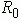
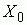
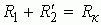
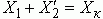

Задание 5. Начертить упрощенную схему замещения нагруженного трансформатора (исключив намагничивающую ветвь с сопротивлениями  и  и объединив сопротивления  и  (см. рис. 18.2); рассчитать и построить векторные диаграммы нагруженного трансформатора при токе I1 = I1н и нагрузках R, L и C.